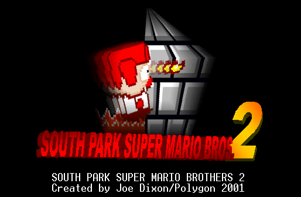
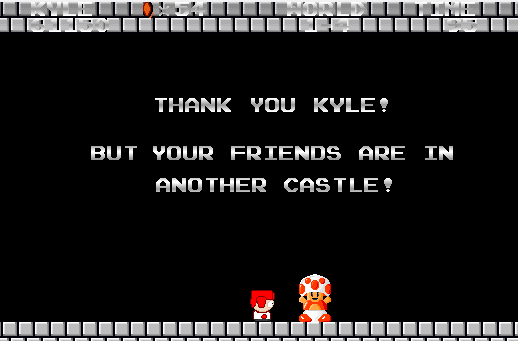
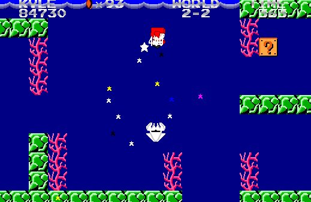

South Park Super Mario Bros 2
Polygon
Going through several worlds of deadly enemies, South Park Super Mario Bros 2 is a South Park version of the original Mario games from Super Nintendo. Playing as Kyle, can you stop Bowser and rescue the princess? Joe "Polygon" Dixon's final South Park game.
Downloads Direct Download - 1.31MB Internet Archive Link2024 South Park Gaming